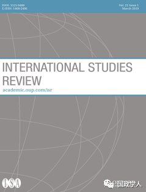
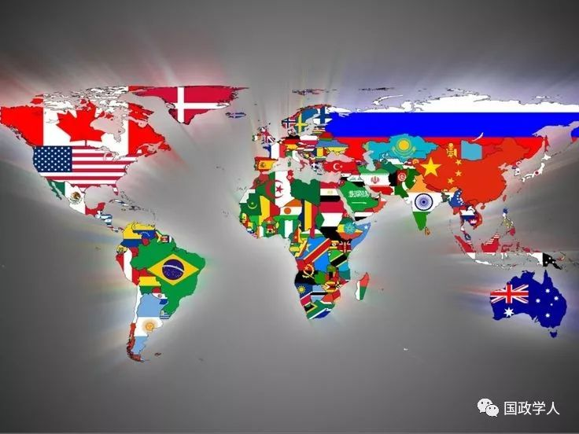

收录于合集

简 介
【 作者 】T.V.Paul：保罗是麦吉尔大学政治学系教授。保罗教授国际关系，特别是国际安全、区域安全和南亚的课程。他是18本书(全部通过大学出版社出版)和近60篇期刊文章或书籍章节的作者或编辑。T.V.Paul于2016年3月17日担任国际研究协会（ISA）2016-2017年度(第56任)主席。2018年9月，保罗又当选为加拿大皇家学会成员。
【 编译 】冯毓婧
【 校对 】李博轩
【 来源 】Paul, T. V. “Assessing Change in World Politics.” International Studies Review 20.2 (2018): 177-185.
【 期刊简介 】 International studies review是牛津大学出版社代表国际研究协会出版的季度同行评审学术期刊。根据期刊引用报告，该期刊2015年的影响因子为1.283，在163个“政治学”类期刊中排名第45位，在86个“国际关系”类期刊中排名第23位。

核心观点
文章通过对过去三十年的世界政治发生的种种变化的介绍引入“变化”这个主题，并认为现今诸多国际关系理论缺乏对世界政治变化的理解这一局限性。随后，作者聚焦2017年巴尔的摩“国际安全法公约”研讨会，对会议上有关国际关系主要范式解释世界政治变化的方法进行个体化分析。作者认为对世界政治变化评估的出发点是探讨变化的类型和标志，并先列举了几位学者提出的变化类型、变化标志及其动因。随后文章探讨了变化的来源和动因，将变化动因分为物质因素和观念因素，物质因素包括经济、军事、技术、人口流动、气候变化等，观念因素包括意识形态、跨国力量和国家战略等，其中作者更倾向于用物质因素解释世界政治的变化。文章关注的重心在于对和平方式的变化的探讨，作者强调了全球治理机构的革新对于世界政治和平变化的重要性，同时认为和平的变化对于国际秩序的影响也可能是非良性的。作者指出，国际关系领域尚未出现有成效的方法或机制来衡量变化或解释导致变化的关键因素、对于变化的理论理解有限等的局限性，并鼓励在评估世界政治变化领域理论多元化和多样化的研究。
文章导读

过去的三十年里，世界政治发生了前所未有的变化，但国际关系学界的诸多理论仍缺乏理解世界政治变化的能力，如结构现实主义有着无法解释由国内结构变量引起的变化的缺陷、自由主义和建构主义在解释非西方社会的变化时的吸引力的缺乏等。作者选取了研讨会上讨论国际政治关键领域变化的 19篇短文，对这些短文所运用的理解评估变化的方法进行个性化分析。
作者认为，评估世界政治变化的出发点是探讨变化的不同类型以及这些变化的关键标志。变化的类型是研究变化的一个突出主题，作者列举了几位学者基于不同视角和方法对变化的区分，包括安德鲁·菲利普斯（Andrew·Philips）基于“系统层次”的对于变化的区分、卡尔·霍尔斯蒂（Kal Holsti）基于技术革新、生产要素等视角对于变化的区分等；作者强调了对变化的标志的研究的重要性和难度，并举例罗伯特·吉尔平（Robert·Gilpin）认为系统变化的标志是系统内行为体的变化的观点，以及华尔兹（Kenneth·Waltz）和温特等人关于系统“连续性”和“变化性”的辩论，但作者认为这两个特性并不极端。
文章的第二节深入讨论了推动世界政治中变化的因素，作者将影响因素分为物质因素和观念因素，物质因素包括经济、军事、技术、人口流动、气候变化等因素，观念因素包括意识形态、跨国力量和国家战略等。作者随即列举了研讨会上不同学者的看法：霍尔斯蒂认为变化的宏观根源是战争和革命，微观根源是思想、规范和重要历史人物的信念等；阿塞马·辛哈（Aseema Sinha）则认为世界政治变化的来源是那些能够在不同领域塑造全球变化的非国家和私人行为者的作用。但作者同时认为，如何比较国家、非国家行为体以及社会和经济力量对世界政治变化的不同作用，仍有待观察研究。
文章的第三节作者讨论世界政治变化的方式：暴力变化与和平变化。在尼塔·克劳福德（Neta Crawford）“和平变化需要更多探索”的呼吁下，作者聚焦研讨会上对和平变化的研究：迈尔斯·卡勒（Miles Kahler）认为地区制度的无序以及发达国家向民族主义和民粹主义发展的倾向极易破坏和平变化。德博拉·韦尔奇·拉森(Deborah Welch Larson)则认为和平的变革取决于大国能否适应在现有国际秩序内建立平行机构的努力，以及应对改革全球治理机构的需要。锡金纳认为，在全球气候管理领域，新机构的治理可能也是实现和平变化所必需的。关于和平变化的另一个研讨重点是：和平变化是否都是好的？杰弗里·托利弗(Jeffrey Taraferro)、史蒂文·洛贝尔(Steven Lobell)和诺林·里普斯曼(Norrin Ripsman)认为，并非所有的和平变化都是有利于国际秩序的，经过和平变化的国际秩序也未必是和平的。作者赞同这种观点，但认为除和平变化外，暴力变化也会产生非良性后果。
作者认为，国际关系领域尚未发展出富有成效的方法和机制来衡量变化或者解释导致变化的关键因素。但基于研讨会上不同学者的讨论，作者强调了各个国际机构在推动实现世界政治和平变化方面的关键作用。
文章末尾，作者总结了国际关系理论在评估世界政治变化上面临的挑战：理论在对变化的表现、标志、原因和后果等方面极为有限。作者认为当前对世界政治变化评估理论的多元化来源于解决不同表现的变化的需要，但他仍强调前文提及的物质因素在评估世界政治变化中的重要性，并同时鼓励在该评估世界政治变化领域的理论多元性与多样性。
扫描下方小程序码查看原文p df
本文由国政学人微信公众平台编译首发
更多阅读
【国关理论】IS杂志重磅：论体系范式和国内政治 | 国政学人
【国关理论】兰德尔·施韦勒：新古典现实主义与中美关系的未来 | 国政学人
国政学人 （ID：guozhengxueren)
为方便学人及时阅读高质量文章
别忘把国政学人设置 星标 哦~